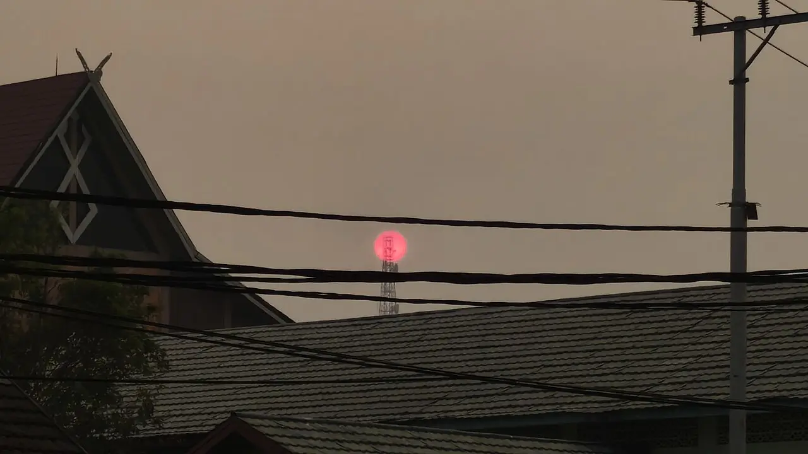
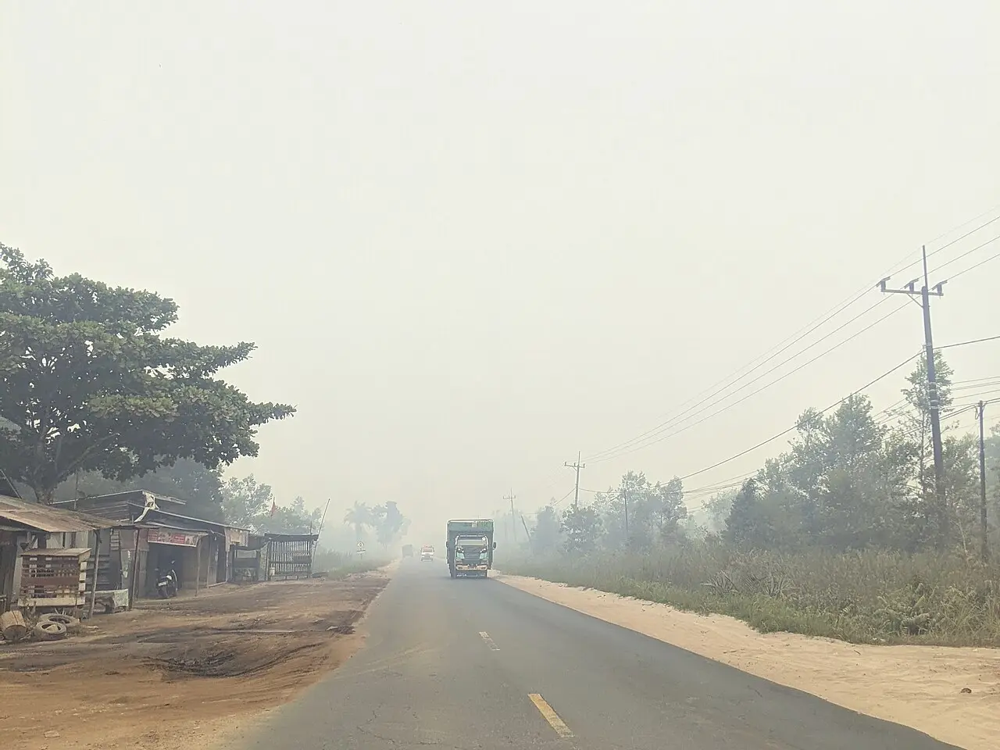
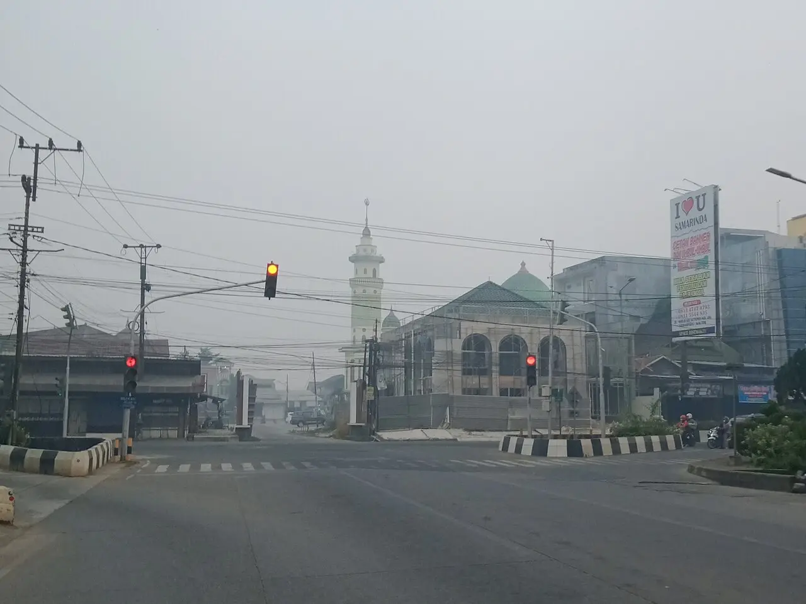
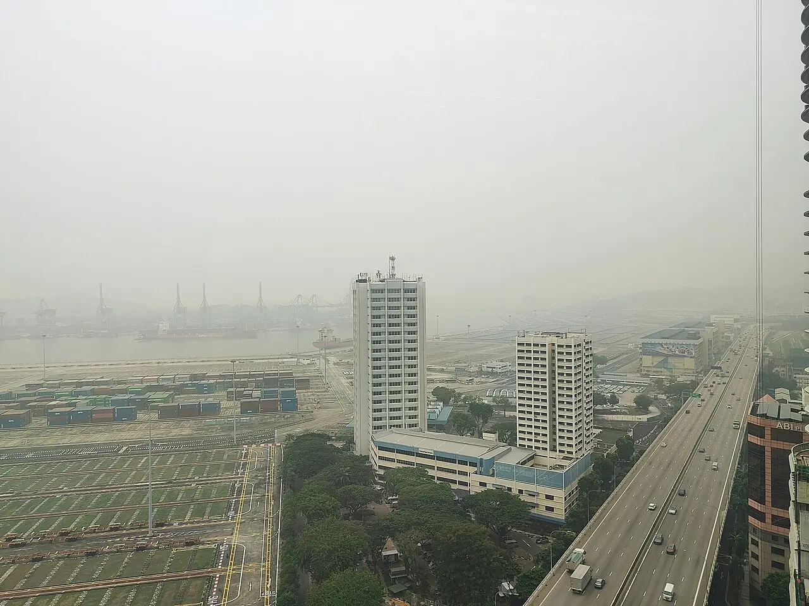

Smoke since August
Fires in Kalimantan and Sumatra have burned more than 1.9 million hectares this year, a satellite monitor says, and sent smoke across Southeast Asia. Indonesia's government calls the haze largely natural; researchers and environmental groups say people lit the fires.
Thousands protested in Jakarta and four other cities on 28 October over corruption and the fires, seeking a national emergency; police fired tear gas in Jakarta. The government says it understands the concerns.


What is happening

_under_thick_smoke_haze,_August_2026.jpg){kind=link}
Fires in Indonesia burned more than 1.9 million hectares between January and the end of September, 38% more than at the same point in 2019, according to the satellite monitor Nusantara Atlas; the government's last official figure was 202,000 hectares at the end of July. The worst fires burn on drained peatland, where they can smoulder underground for weeks. A strong El Niño has made the year unusually dry, but Nusantara Atlas founder David Gaveau told the Guardian: “El Niño is an enabler … But you need a match. And we know what that is; it's people.” The Star (AFP) · Guardian


Indonesia's Health Ministry recorded 283,270 acute respiratory illness cases in seven fire-hit provinces as of 13 October, more than double the 113,336 of 9 September, when children under five made up more than a fifth of cases. The research group CREA estimates that fire smoke caused about 1,700 deaths in August alone. “While we sleep, the whole family is just breathing in the smoke,” Ely Marlina, a 46-year-old schoolteacher and volunteer firefighter, told the Guardian. Mongabay · The Star · CREA · Guardian


Fires are often lit as a cheap way to clear land for oil palm planting, the Guardian reports. Data from the environmental group Walhi show seven in ten hotspots across Kalimantan were on industrial concessions, and Nusantara Atlas found that the largest burned concessions there between January and July belong to oil palm, pulpwood and mining companies. A hotspot on company land does not by itself show who lit the fire. Guardian · Jakarta Post editorial, via The Star · Jakarta Post

Police arrested 72 people in August and said they were tracing whether companies paid for the land clearing; by late September police had arrested 113 people and the environment ministry was investigating 19 companies. On 12 October President Prabowo Subianto cited 639 hectares of active firefighting as a sign the fires were receding; the disaster agency and forestry ministry later stressed that this was only the area firefighters were working on, not all that was burning. ABC · Guardian · Mongabay

_during_2026_haze_20261014_124635.jpg){kind=link}
The smoke has reached Malaysia, Singapore, Brunei, Timor-Leste and the Philippines. Singapore has served legal notices on 10 Indonesian companies under its haze law, under which no company has been fined or sued since it came into force in 2014. In West Kalimantan, Indigenous and civil society groups are suing President Prabowo and nine other defendants for “gross negligence”, seeking a national disaster declaration and residents' healthcare costs. None of those named attended the first hearing on 7 October, and the court adjourned the case to 21 October. Guardian · Eco-Business · Guardian
On 28 October thousands protested in Jakarta and in Bandung, Malang, Yogyakarta and Makassar over economic hardship, corruption and the handling of the fires, AFP reports; protesters demanded a national emergency declaration. In Jakarta about 14,000 police officers, plus soldiers, were deployed, and police fired several tear gas canisters near Bundaran HI square after some in the crowd threw plastic bottles and burned rubbish. No arrests or injuries were reported. France 24 (AFP)
Indonesia's government says the haze is largely natural: the head of its communications office said Malaysia and Singapore should see it as “beyond human error” and “truly nature”. President Prabowo said on 12 October that the burning had fallen from “hundreds of thousands of hectares” to below 1,000 thanks to large-scale government intervention, and the coordinating minister for security said Indonesia was “still able to handle this”. The forestry ministry did not respond to AFP's request for comment on the 1.9 million hectare estimate. On 28 October the government said it understood students' concerns; its spokesman said more than 72,000 people were deployed in firefighting and 5.3 million masks distributed. Mongabay · The Star (AFP) · France 24 (AFP)
In the daily edition: Thu 29 Oct